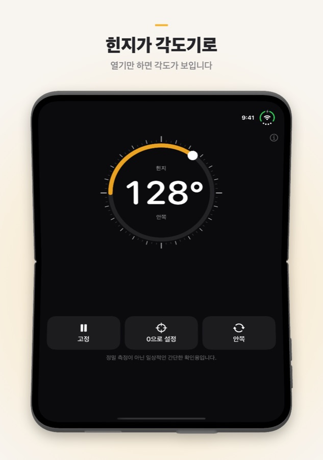
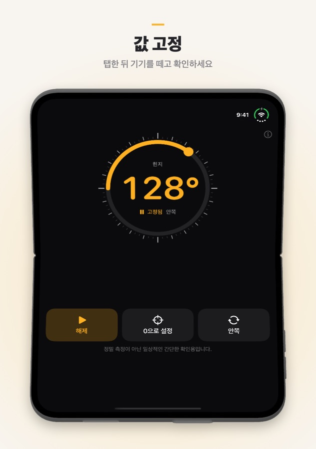
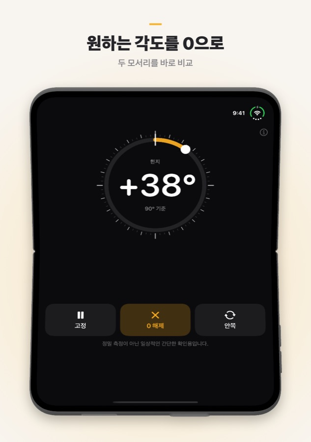

Fold Angle
접는 iPhone은 자신이 얼마나 열려 있는지 이미 알고 있습니다. Fold Angle은 그 힌지를 각도기로 바꿉니다. 방 모서리, 문, 상자 가장자리에 대면 두 화면 사이의 각도를 보여 줍니다. 다른 iPhone과 iPad에서는 기울기 측정기로 작동합니다.
iOS 17 이상이 필요합니다.
다운로드


지원
질문이 있거나 버그를 발견했거나 도움이 필요하신가요? 연락 주세요. 모든 메시지를 읽습니다.
자주 묻는 질문
- 어떤 기기에서 작동하나요?
Fold Angle은 iPhone Duo를 위해 만들어졌으며 힌지 각도를 직접 읽습니다. 다른 iPhone과 iPad에서는 모션 센서를 이용해 기기가 수평에서 얼마나 기울었는지 보여 주는 기울기 측정기로 작동합니다. - 측정값을 유지하려면?
고정을 탭하면 숫자가 멈추므로 기기를 뗀 뒤 확인할 수 있습니다. 해제를 탭하면 실시간 측정으로 돌아갑니다. 숫자를 두 번 탭해도 됩니다. - '0으로 설정'은 무엇인가요?
현재 각도를 새로운 0으로 만듭니다. 두 모서리를 비교하거나 문이 얼마나 열렸는지 잴 때 유용합니다. 0 해제를 탭하면 원래 각도로 돌아갑니다. - '안쪽'과 '바깥쪽'은 무엇인가요?
안쪽은 두 화면 사이의 각도이고, 바깥쪽은 접힌 부분 뒷면의 각도(360°에서 안쪽 각도를 뺀 값)입니다. 버튼을 탭해 전환합니다. - 평평한 곳에 두어도 0°가 아니라 2° 정도로 나옵니다.
기울기 모드에서는 카메라 돌출부 때문에 기기 한쪽이 들립니다. 먼저 평평한 면에서 0으로 설정을 탭한 뒤 측정하거나, 화면이 아래로 가도록 놓으세요. - 진동이 느껴지지 않아요.
Fold Angle은 15°마다 가볍게, 정확히 90°에서 강하게 진동합니다. 아무것도 느껴지지 않으면 설정 → 사운드 및 햅틱 → 시스템 햅틱이 켜져 있는지 확인하세요. - 얼마나 정확한가요?
일상적인 간단한 확인용이며 정밀 측정용이 아닙니다. 정확해야 하는 작업에서는 각도기나 수평계로 확인하세요. - 데이터를 수집하나요?
아니요. Fold Angle에는 계정도 서버도 없으며 네트워크 요청도 하지 않습니다. 센서 값은 기기에만 남습니다.
스크린샷



법적 고지
개인정보 처리방침
최종 업데이트: 2026년 10월
소개
Fold Angle은 '당신의 데이터는 당신의 것'이라는 단순한 원칙으로 만들어졌습니다. 이 개인정보 처리방침은 앱이 어떤 정보에 접근하고 어떻게 처리하는지 설명합니다. 요약하면, 저희는 어떤 데이터도 받지 않습니다.
센서
Fold Angle은 화면에 각도를 표시하기 위해서만 힌지 각도(iPhone Duo)와 모션 센서(다른 기기)를 읽습니다. 이 값은 기기에서 처리되며 저장, 업로드, 공유되지 않습니다.
데이터 수집 없음
저희는 어떠한 개인정보도 수집, 저장, 추적, 처리하지 않습니다. 앱은 계정이나 어떤 형태의 등록도 요구하지 않습니다.
인터넷 연결 불필요
Fold Angle은 완전히 오프라인으로 작동하며 네트워크 요청을 하지 않습니다.
구매
모든 구매는 App Store를 통해 Apple이 처리합니다. 저희는 Apple ID, 결제 수단 또는 기타 결제 정보를 받지 않습니다.
제3자 서비스
Fold Angle은 제3자 분석, 광고, 추적 서비스를 사용하지 않습니다. 어떤 데이터도 제3자와 공유되지 않습니다.
아동 개인정보 보호
개인 데이터를 수집하지 않으므로 Fold Angle은 아동 온라인 개인정보 보호법(COPPA) 및 전 세계 유사 규정을 준수합니다.
방침 변경
이 개인정보 처리방침은 수시로 업데이트될 수 있습니다. 변경 사항은 게시 즉시 효력이 발생합니다. 이 페이지를 정기적으로 확인해 주세요.
문의
이 개인정보 처리방침에 대해 궁금한 점이 있으면 다음으로 연락해 주세요: support [at] hoshinosoftware [dot] com
이용약관
최종 업데이트: 2026년 10월
약관 동의
Fold Angle을 다운로드하거나 사용하면 본 이용약관에 동의하는 것으로 간주됩니다. 동의하지 않으면 앱을 사용하지 마세요.
라이선스
Hoshino Software는 본 약관 및 Apple의 App Store 이용약관에 따라 Apple 기기에서 Fold Angle을 사용할 수 있는 개인적이고 양도 불가능하며 비독점적인 라이선스를 부여합니다.
허용된 사용
Fold Angle은 합법적인 목적으로만 사용할 수 있습니다. 관련 법률이나 규정을 위반하는 방식으로 앱을 사용하지 않는 데 동의합니다.
정밀 측정 기기가 아님
Fold Angle은 일상적인 간단한 확인을 위한 앱입니다. 측정값은 기기의 센서에 따라 달라지며 1° 이상 차이가 날 수 있습니다. 오차가 상해, 손상 또는 손실로 이어질 수 있는 상황에서는 의존하지 마세요.
무보증
Fold Angle은 명시적이든 묵시적이든 어떠한 보증 없이 '있는 그대로' 제공됩니다. 앱에 오류가 없거나 중단되지 않거나 특정 목적에 적합하다는 것을 보증하지 않습니다.
책임 제한
관련 법률이 허용하는 최대 범위 내에서, Hoshino Software는 Fold Angle의 사용 또는 사용 불가로 인해 발생하는 직접적, 간접적, 부수적, 특별 또는 결과적 손해에 대해 책임지지 않습니다.
약관 변경
본 이용약관은 수시로 업데이트될 수 있습니다. 변경 사항이 게시된 후에도 앱을 계속 사용하면 개정된 약관에 동의하는 것으로 간주됩니다.
준거법
본 약관은 Hoshino Software가 사업을 운영하는 관할권의 법률을 따릅니다.
문의
본 이용약관에 대해 궁금한 점이 있으면 다음으로 연락해 주세요: support [at] hoshinosoftware [dot] com